Créditos das fotos
A Velune Odontologia é uma empresa fictícia, criada pela Tirvo como projeto demonstrativo. As fotos usadas no site vêm de bancos de imagem com licença livre e mostram pessoas e lugares reais que não têm relação com a marca.
Fotos em domínio público (CC0) podem ser usadas sem crédito, mas listamos todas. Fotos com licença CC BY exigem o crédito ao autor, informado abaixo.
 Smiling WomanAutor: Kristin Hardwick · Licença: CC0 (domínio público) · Fonte: StockSnapUsada em: Paciente sorrindo na recepção da clínica
Smiling WomanAutor: Kristin Hardwick · Licença: CC0 (domínio público) · Fonte: StockSnapUsada em: Paciente sorrindo na recepção da clínica Chair DentistAutor: Daniel Frank · Licença: CC0 (domínio público) · Fonte: StockSnapUsada em: Consultório com cadeira e iluminação natural
Chair DentistAutor: Daniel Frank · Licença: CC0 (domínio público) · Fonte: StockSnapUsada em: Consultório com cadeira e iluminação natural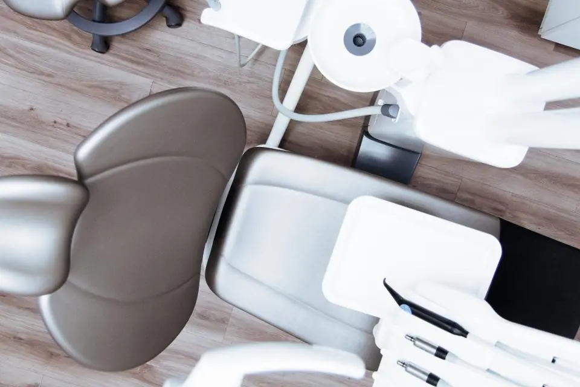
Chair DentistAutor: Daniel Frank · Licença: CC0 (domínio público) · Fonte: StockSnapUsada em: Consultório preparado para atendimento invisalign-a22Autor: stellahyc910 · Licença: CC BY 2.0 · Fonte: FlickrUsada em: Scanner intraoral em uso
invisalign-a22Autor: stellahyc910 · Licença: CC BY 2.0 · Fonte: FlickrUsada em: Scanner intraoral em uso Cone Beam Computed Tomography (CBCT)Autor: U.S. Navy Medicine · Licença: CC0 (domínio público) · Fonte: RawpixelUsada em: Sala de tomografia
Cone Beam Computed Tomography (CBCT)Autor: U.S. Navy Medicine · Licença: CC0 (domínio público) · Fonte: RawpixelUsada em: Sala de tomografia Free microscope science equipment imageAutor: Autor não informado · Licença: CC0 (domínio público) · Fonte: RawpixelUsada em: Microscópio odontológico
Free microscope science equipment imageAutor: Autor não informado · Licença: CC0 (domínio público) · Fonte: RawpixelUsada em: Microscópio odontológico Free close image dentist's picksAutor: Autor não informado · Licença: CC0 (domínio público) · Fonte: RawpixelUsada em: Central de esterilização, Higienização profissional em consultório (detalhe)
Free close image dentist's picksAutor: Autor não informado · Licença: CC0 (domínio público) · Fonte: RawpixelUsada em: Central de esterilização, Higienização profissional em consultório (detalhe) Smiling HipsterAutor: Candace McDaniel · Licença: CC0 (domínio público) · Fonte: StockSnapUsada em: Antes · Clareamento e lentes em 6 dentes, Depois · Clareamento e lentes em 6 dentes, Antes · Clínica geral e prevenção, Depois · Clínica geral e prevenção, Sorriso após tratamento estético (detalhe)
Smiling HipsterAutor: Candace McDaniel · Licença: CC0 (domínio público) · Fonte: StockSnapUsada em: Antes · Clareamento e lentes em 6 dentes, Depois · Clareamento e lentes em 6 dentes, Antes · Clínica geral e prevenção, Depois · Clínica geral e prevenção, Sorriso após tratamento estético (detalhe)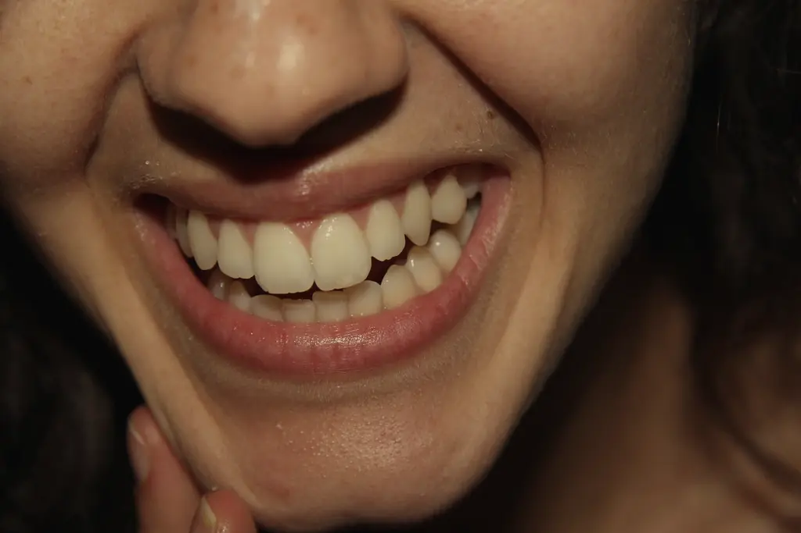
smileAutor: El Mostrito · Licença: CC BY 2.0 · Fonte: FlickrUsada em: Antes · Clareamento e lentes, Depois · Clareamento e lentes, Sorriso após tratamento estético- Woman PortraitAutor: Matt Moloney · Licença: CC0 (domínio público) · Fonte: StockSnapUsada em: Antes · Estética do sorriso, Depois · Estética do sorriso
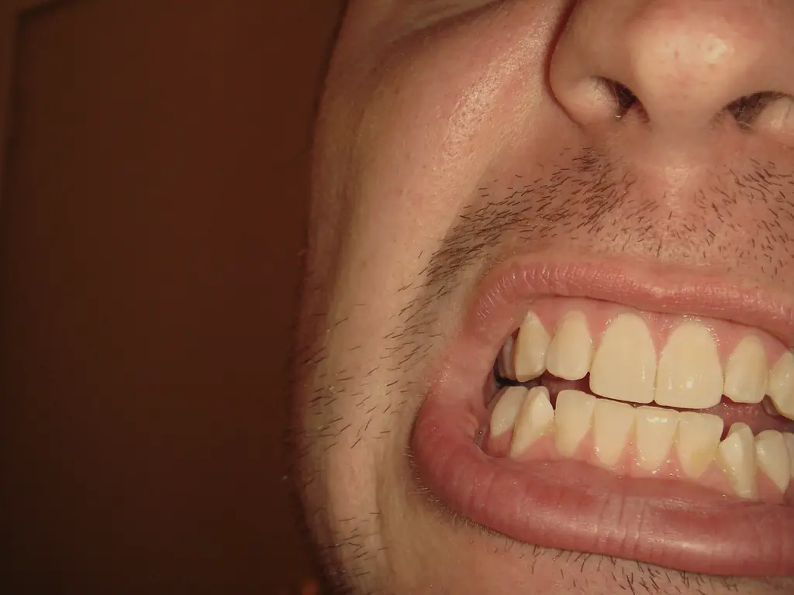
Crooked TeethAutor: greggoconnell · Licença: CC BY 2.0 · Fonte: FlickrUsada em: Antes · Facetas em resina, Depois · Facetas em resina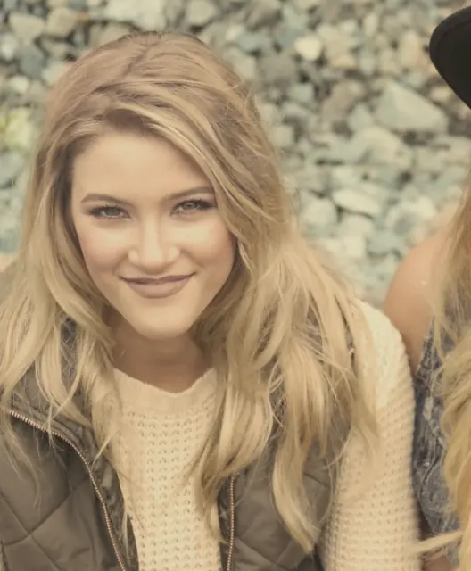
Women FriendsAutor: Candace McDaniel · Licença: CC0 (domínio público) · Fonte: StockSnapUsada em: Antes · Implante unitário, Depois · Implante unitário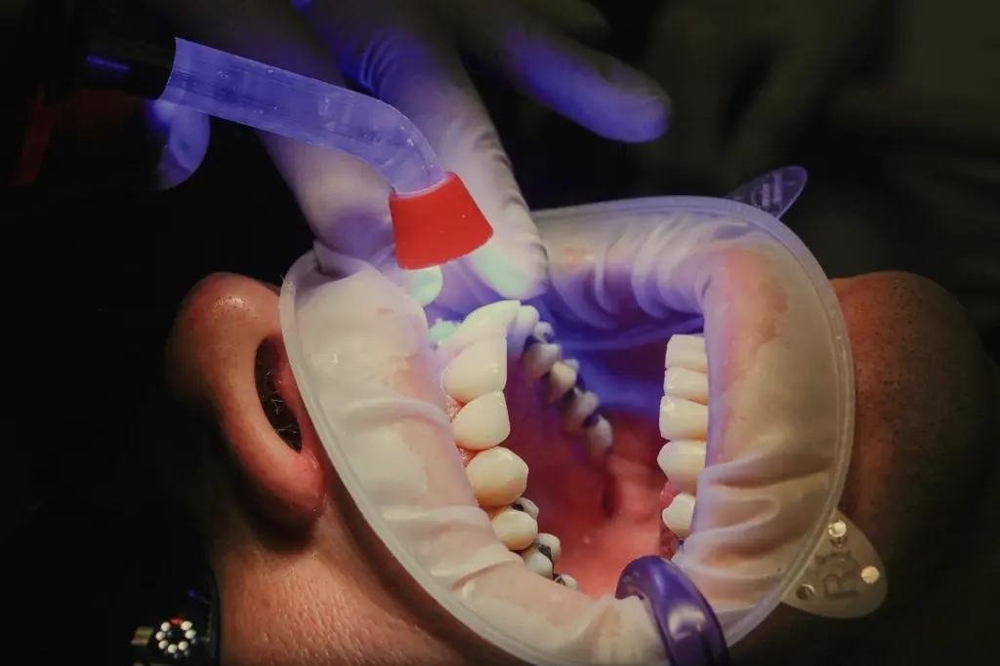
DentistAutor: Autor não informado · Licença: CC0 (domínio público) · Fonte: RawpixelUsada em: Antes · Implantes dentários, Depois · Implantes dentários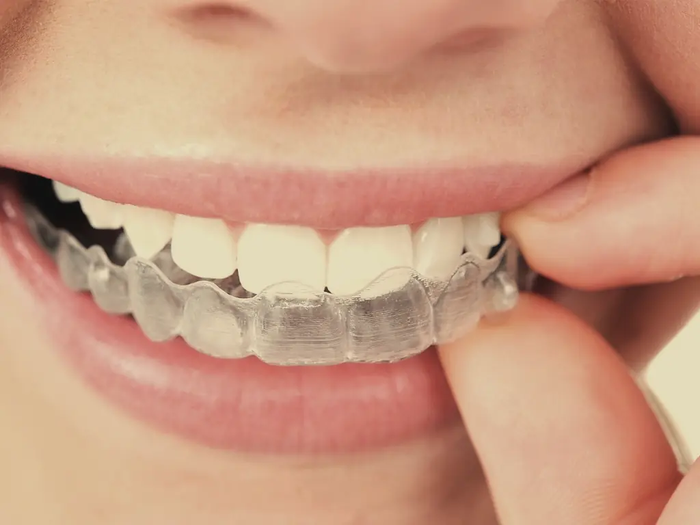
InvisalignAutor: mamamockingbird77 · Licença: CC BY 2.0 · Fonte: FlickrUsada em: Antes · Alinhadores e ortodontia, Depois · Alinhadores e ortodontia, Antes · Alinhadores transparentes, Depois · Alinhadores transparentes- Kids ChildAutor: frank mckenna · Licença: CC0 (domínio público) · Fonte: StockSnapUsada em: Antes · Odontopediatria, Depois · Odontopediatria
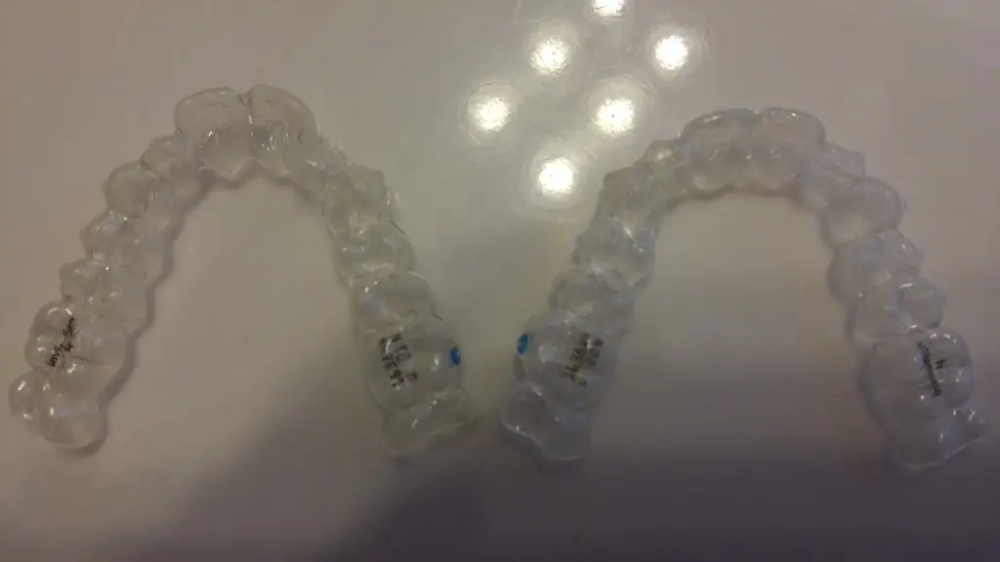
invisalign bracesAutor: kinseikun · Licença: CC0 (domínio público) · Fonte: FlickrUsada em: Alinhador transparente em estojo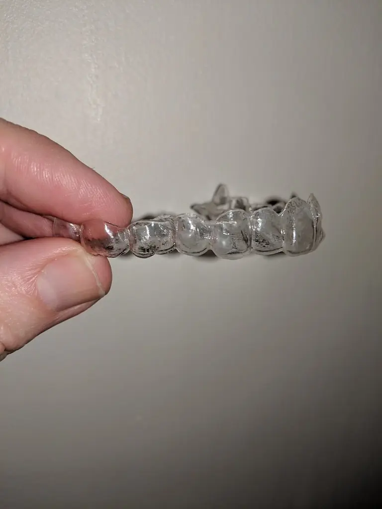
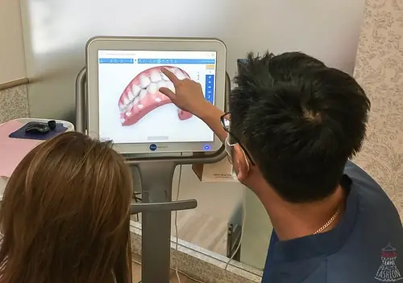
invisalign-a24Autor: stellahyc910 · Licença: CC BY 2.0 · Fonte: FlickrUsada em: Avaliação com escaneamento digital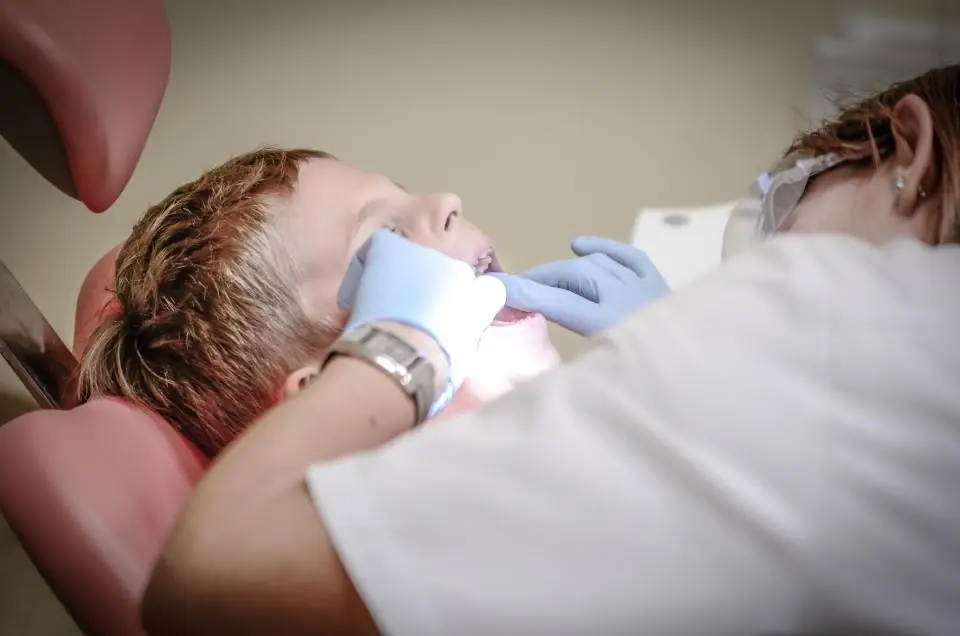
Dentist OrthodontistAutor: Michal Jarmoluk · Licença: CC0 (domínio público) · Fonte: StockSnapUsada em: Criança em consulta no espaço infantil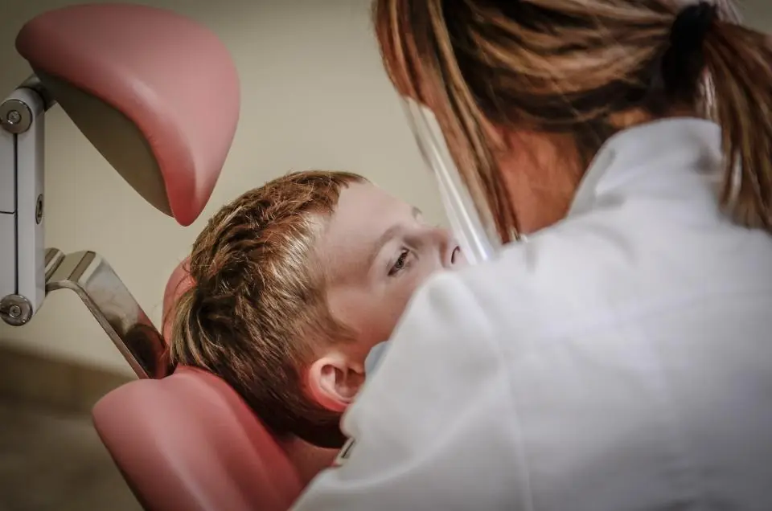
Dentist OrthodontistAutor: Michal Jarmoluk · Licença: CC0 (domínio público) · Fonte: StockSnapUsada em: Criança em consulta no espaço infantil (detalhe)- Health CareAutor: Direct Media · Licença: CC0 (domínio público) · Fonte: StockSnapUsada em: Equipe da clínica reunida
- Health CareAutor: Direct Media · Licença: CC0 (domínio público) · Fonte: StockSnapUsada em: Equipe reunida na sala de planejamento
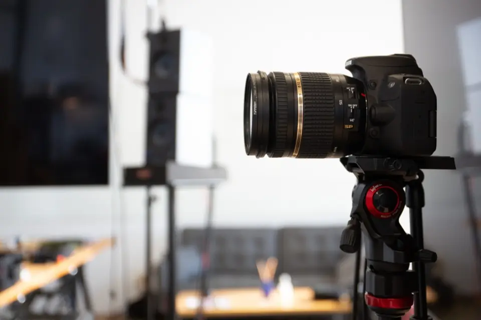
Camera StudioAutor: Kristin Hardwick · Licença: CC0 (domínio público) · Fonte: StockSnapUsada em: Estúdio de fotos clínicas- Abstract ModernAutor: The Building Envelope · Licença: CC0 (domínio público) · Fonte: StockSnapUsada em: Fachada da clínica no Bigorrilho
- Sem títuloAutor: Autor não informado · Licença: CC0 (domínio público) · Fonte: RawpixelUsada em: Fachada e recepção da clínica
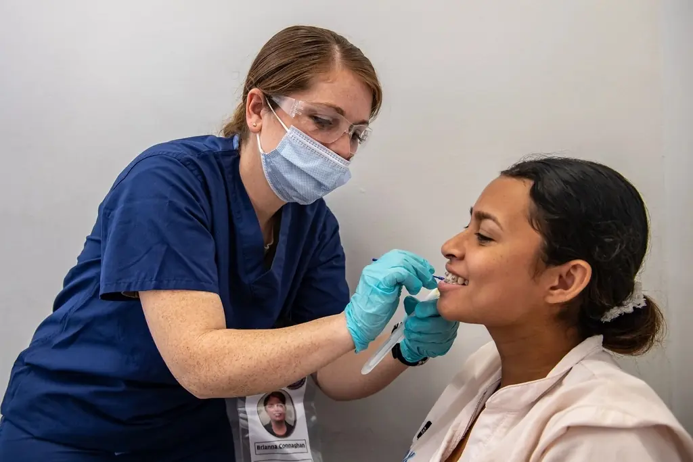
CP22 - WPS Provides MedicalAutor: U.S. Navy Medicine · Licença: CC0 (domínio público) · Fonte: RawpixelUsada em: Higienização profissional em consultório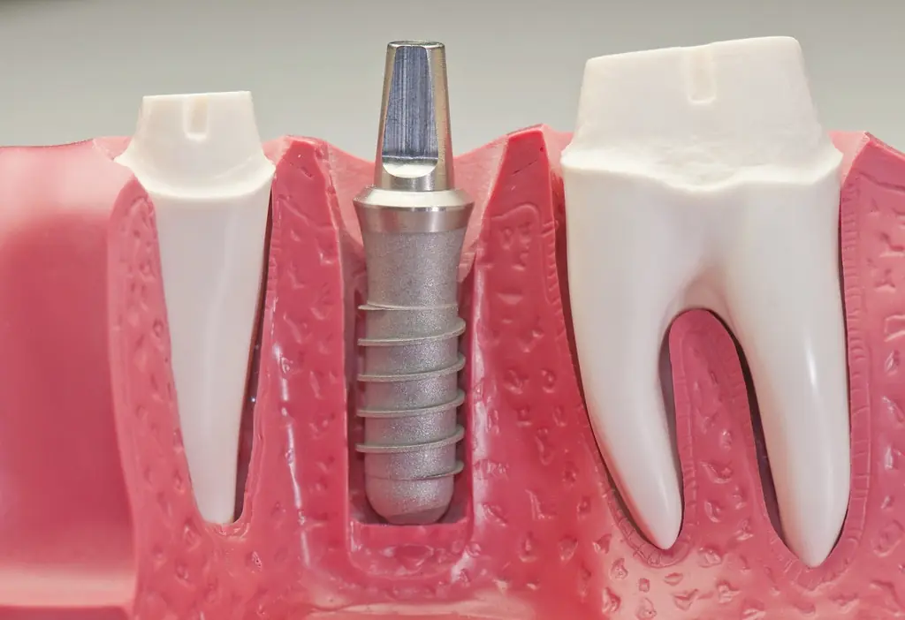
Dental Implant ModelAutor: Dr.Kh.Qalam · Licença: Marca de domínio público · Fonte: FlickrUsada em: Implante e prótese em modelo 3D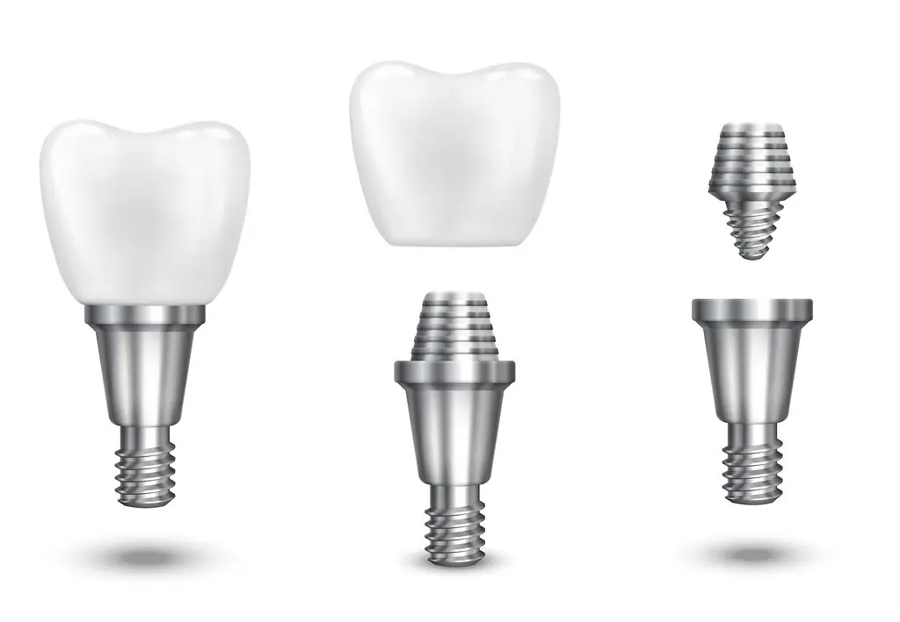
Can Dental Implants Get Cavities or Gum Disease?Autor: valleysmilesphx · Licença: Marca de domínio público · Fonte: FlickrUsada em: Implante e prótese em modelo 3D (detalhe)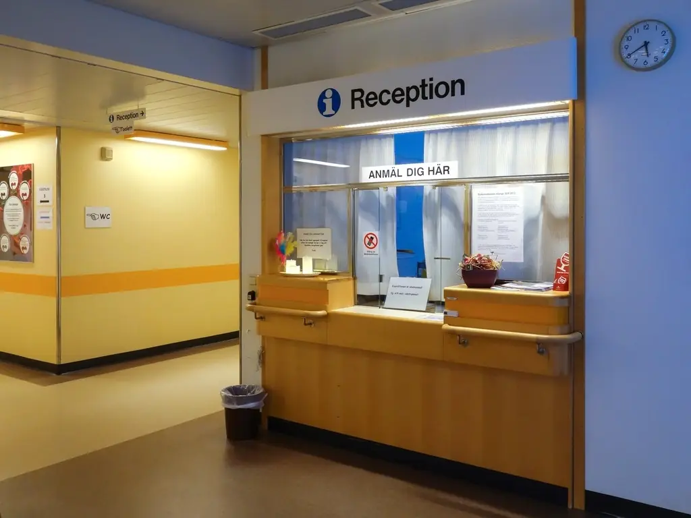
Reception clinical physiology - NÄLAutor: Autor não informado · Licença: CC0 (domínio público) · Fonte: RawpixelUsada em: Recepção com atendimento ao paciente Female DoctorAutor: Direct Media · Licença: CC0 (domínio público) · Fonte: StockSnapUsada em: Retrato: Dra. Helena Varga
Female DoctorAutor: Direct Media · Licença: CC0 (domínio público) · Fonte: StockSnapUsada em: Retrato: Dra. Helena Varga Male DoctorAutor: Direct Media · Licença: CC0 (domínio público) · Fonte: StockSnapUsada em: Retrato: Dr. Caio Moretti
Male DoctorAutor: Direct Media · Licença: CC0 (domínio público) · Fonte: StockSnapUsada em: Retrato: Dr. Caio Moretti Health CareAutor: Direct Media · Licença: CC0 (domínio público) · Fonte: StockSnapUsada em: Retrato: Dra. Lívia Saraiva
Health CareAutor: Direct Media · Licença: CC0 (domínio público) · Fonte: StockSnapUsada em: Retrato: Dra. Lívia Saraiva- Health CareAutor: Direct Media · Licença: CC0 (domínio público) · Fonte: StockSnapUsada em: Retrato: Dr. Renan Albuquerque
- Male DoctorAutor: Direct Media · Licença: CC0 (domínio público) · Fonte: StockSnapUsada em: Retrato: Dr. Tomás Rangel
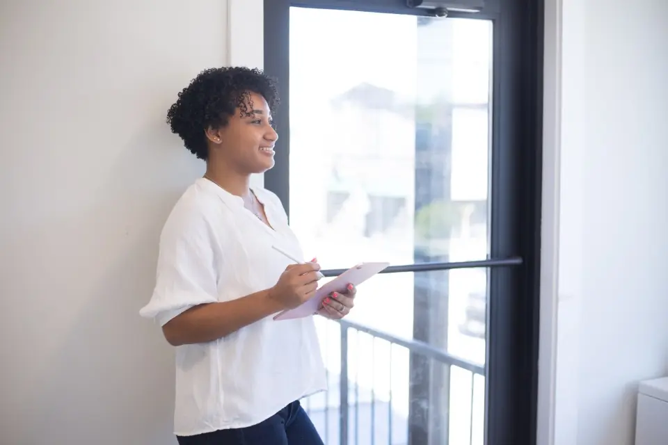
Woman TabletAutor: Kristin Hardwick · Licença: CC0 (domínio público) · Fonte: StockSnapUsada em: Retrato: Dra. Bia Kaminski